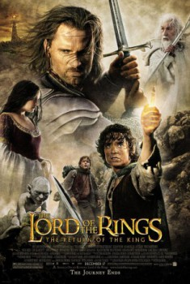

The Lord of the Rings: The Return of the King (2003)


The eye of the enemy is moving.

IMDb Rating:


9.0/10 (1771577 votes)
Country:New Zealand, 3h 21min
Spoken languages:English
Genres:Action, Adventure, Drama, Fantasy
Director(s):Peter Jackson
Video Codec:Unknown
Number: 1063